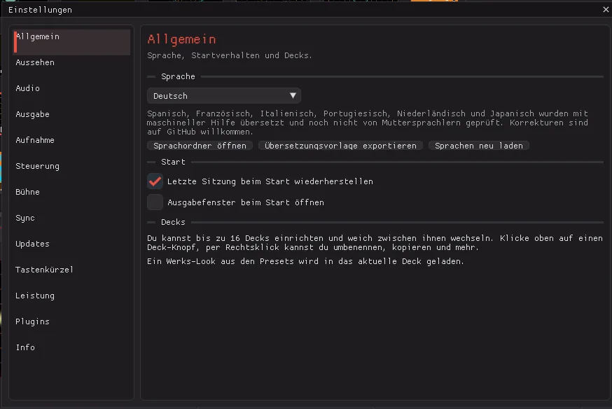

Inhalt
Erste Schritte
- Willkommen bei NyrexVJ
- Installation und erster Start
- Das Fenster im Überblick
- Deine erste Show in fünf Minuten
Visuals spielen
- Das Clip-Raster
- Decks und Übergänge
- Layer und Mischmodi
- Das Clip-Fenster
- Effekte
- Die Bibliothek
- Presets und Sitzungen
- Das Master-Fenster
Musik und Bewegung
Eigene Inhalte
- Video- und Bild-Clips
- Deine eigenen Shader
- 3D-Modelle
- Der Clip Creator
- Text, Partikel und Effektketten
- Der Node-Effekt-Editor
- Live-Quellen: Spout, NDI und Kameras
Ausgabe und Aufnahme
Live-Steuerung und Shows
- Steuerung: MIDI, OSC und die Webseite
- Show-Sync und Timecode
- Die Show-Zeitleiste
- Bühne: DMX, VRSL und VRChat
- Plugins
Nachschlagen und Hilfe
Handbuch / Nachschlagen und Hilfe
Einstellungen im Überblick
#Einstellungen öffnen
Öffne die Einstellungen über das Menü Einstellungen oder mit Strg+,. Das Fenster hat links eine Liste von Seiten.
| Seite | Was du findest |
|---|---|
| Allgemein | Sprache, letzte Sitzung wiederherstellen, Ausgabefenster beim Start öffnen, Decks |
| Aussehen | Farbthema, Oberflächengröße und Bildschirmskalierung, Kontrast, Tastaturbedienung, Statusleiste, Fensteranordnung zurücksetzen und deine Arbeitsbereiche |
| Audio | Audioquelle, Verstärkung, Glättung, Beat-Schwelle, BPM mit Audio synchronisieren |
| Ausgabe | Qualität und Auflösung, Spout, NDI, bis zu vier Ausgabefenster mit Slices, Mapping, Überblendung, Venue-Setups und Frame-Lock |
| Aufnahme | Format, Größe, Bildrate, Qualität, Ton, Ordner und die Aufnahme-Schaltflächen |
| Steuerung | MIDI, OSC-Ein- und Ausgang, die Web-Oberfläche und ihr Token |
| Bühne | Art-Net, der DMX-Streifen, VRChat-Parameter, Kanäle und Testbilder |
| Sync | Clock-Quelle, Timecode, MIDI-Clock, Pro DJ Link, die Cue-Liste |
| Updates | Update-Kanal, automatische Prüfungen und Downloads, der Update-Status |
| Tastenkürzel | Deine Tastenkürzel: ändern, leeren oder zurücksetzen |
| Leistung | Bildratenbegrenzung, Bildzeit-Budget, Renderqualität, Text und Partikel, gemessene Bildzeiten, Speicher, Video und FFmpeg, DXV-Umwandlung |
| Plugins | Installierte Plugins und ihre Quellen |
| Info | Version, Links, der Datenordner |


#Aussehen
Das Farbthema ändert den Akzent der ganzen Oberfläche und sonst nichts. Es gibt elf Themen: Arena (der Standard, ein dunkles Türkisgrün), Studio, Orange, Blau, Rot, Grün, Lila, Pink, Cyan, Gold und Mono. Jedes davon hat das Aussehen von Resolume Arena: neutrale Grautöne ohne Farbstich, flache Ecken, graue Reiterleisten mit dunklerem gewähltem Reiter, flache Balken als Regler mit dem Namen rechtsbündig, dem Wert, zwei kleinen Feldern für Minus und Plus und einer dünnen Marke im Akzent, dunkle Bänder mit einem kleinen Dreieck über jeder Gruppe von Reglern, eine helle Tönung der gewählten Farbe mit dunklem Text für den gewählten Layer, das gewählte Deck und die laufende Spalte und die Sans-Serif-Schrift des Systems statt der eingebauten Pixelschrift. Eine Einrichtung, die vor 0.60.0 Studio benutzt hat, wird einmal auf Arena umgestellt. Hoher Kontrast behält seine eigenen hellen Umrandungen. Die Oberflächengröße skaliert alle Fenster und Texte, und Zurücksetzen stellt sie wieder her. Dieselbe Seite hat die Bildschirmskalierung, den hohen Kontrast, die Tastaturbedienung, das Zurücksetzen der Fensteranordnung und die Arbeitsbereiche; siehe Oberfläche, Arbeitsbereiche und Barrierefreiheit.
Fehler gefunden oder etwas vergessen? Sag es uns auf GitHub. Dasselbe Handbuch steckt im Programm, du hast es also auch ohne Internet. Öffne es mit F1 oder über das Menü Hilfe, Handbuch.